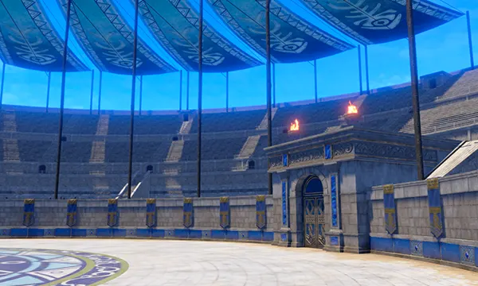

Breston
Open in the wiki →Town/port. The capital of the kingdom of Brezarant, named in honor of its heroic founder, Breza
- Type
- town/port
- Connects to
- Areus Stronghold, Ries North Stronghold, Lake Baldr, Chiron Posthouse, Pallas Bridge, Whill, Mount Orgus Trail, Forest of No Return, Nemea Cavern